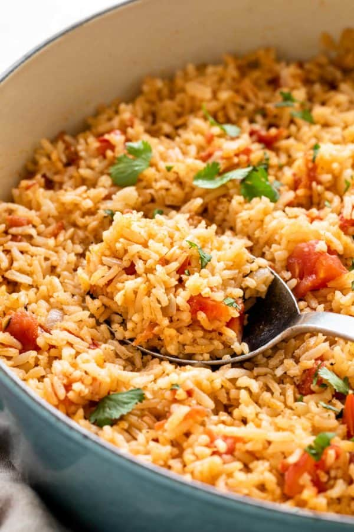

Marvelous Mexican Rice

Description
Maybe you're looking for a restaurant-style Mexican rice dish to pair with your carne asada. This simple recipe is a popular choice that can complete your meal. I'll show you how to transform bland grains of white rice into a flavorful pot, bursting with subtly sweet and earthy notes.
The rice is toasted on the stovetop to develop a nuttiness from the browning process. Then it simmers with vegetables and fragrant spices. Each grain absorbs flavors in the liquid and takes on an orange hue. You can turn a bland rice dish into an amazing one in a few easy steps.
Long grain white rice is best because the elongated shape yields light grains that stay separate after absorbing water. Extra-long grain and jasmine rice also work well. I recommend rinsing the rice to wash away any excess starches on the surface that could make the texture sticky. Then drain well!
Ingredients
- 2 cups long grain rice, extra long grain, or jasmine
- 2 tablespoons olive oil
- ½ cup diced yellow onion, ¼” dice
- 1 tablespoon minced garlic
- 1 teaspoon cumin
- 1 teaspoon kosher salt
- 1 tablespoon tomato paste
- 1 cup diced tomatoes, ¼” dice
- 4 cups unsalted chicken stock, or broth
- 1 tablespoon chopped cilantro
Steps
- Prepare the Rice - Add the rice to a fine-mesh strainer. Rinse under cool running water until it runs clear, scrubbing the grains with your fingers several times, about 1 minute. Shake the colander and press to drain the excess water until dry.
- Saute the Aromatics - Heat a Dutch oven or medium saucepan over medium heat, and add olive oil. Once hot, add in the onion and saute until slightly translucent, 1 minute. Add the garlic and saute until fragrant, 30 seconds.
- Saute the Rice - Add the rice and turn the heat to medium-high. Saute, frequently stirring, until the grains are lightly toasted, 4 to 5 minutes. Make sure to scrape the bottom of the pan, so the rice does not burn.
- Add Flavorings - Turn the heat down to medium, add the cumin and salt, and saute for 30 seconds. Add the tomato paste, stir to combine, and cook for 30 seconds. Add in diced tomatoes and stir to combine.
- Simmer - Slowly pour in the chicken stock, and bring to a boil. Cover and then reduce to a simmer over low heat. Cook until the rice is tender, about 20 minutes.
- Let it Sit - Turn off the heat, keep the cover on, and allow the rice to sit for 10 minutes to absorb all the water. Gently fluff with a fork—taste and season with more salt as desired. Garnish with cilantro leaves.